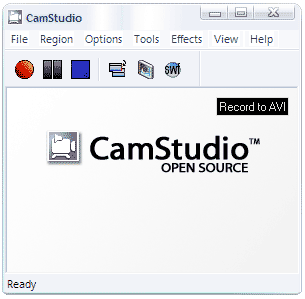

CamStudio
Используется для стриминга потокового видео в сеть и для записи видео с экрана компьютера.

CamStudio is able to record all screen and audio activity on your computer and create industry-standard AVI video files and using its built-in SWF Producer can turn those AVIs into lean, mean, bandwidth-friendly Streaming Flash videos (SWFs)
Here are just a few ways you can use this software:
- You can use it to create demonstration videos for any software program
- Or how about creating a set of videos answering your most frequently asked questions?
- You can create video tutorials for school or college class
- You can use it to record a recurring problem with your computer so you can show technical support people
- You can use it to create video-based information products you can sell
- You can even use it to record new tricks and techniques you discover on your favourite software program, before you forget them
Сайт программы:
http://camstudio.org